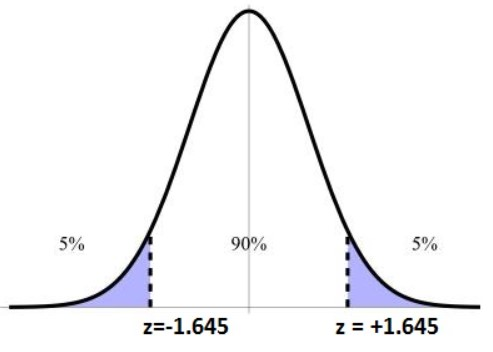
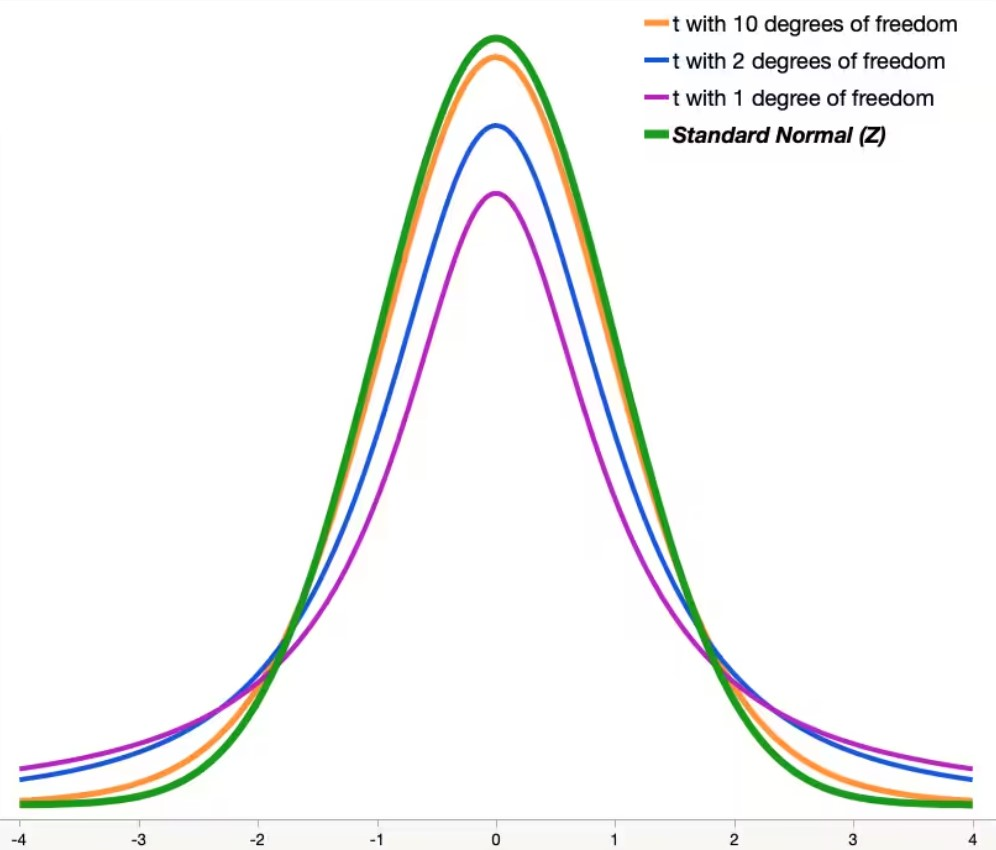

mean(rnorm(10,50,4))[1] 50.8525mean(rnorm(10,50,4))[1] 50.10303When we were showing the Central Limit Theorem through simulations, we were able to generate random samples over and over again to see that the sampling distribution did follow a normal distribution when the sample size was sufficiently large. But, in the “real world” we are not able to generate an infinite number of samples, rather we are given a single sample and told to analyze it and try to figure out what the population mean is. We will want to come up with a way to state how confident we are about our estimation of the population mean.
Often we are interested in determining the population mean, and to do this we have to estimate the population mean (\(\mu\)) with the sample mean (\(\overline{x}\)). We can see an example of this by generating 10 values from a normal distribution with a mean of 50 and a standard deviation of 4 and noticing that the sample mean is never exactly the population mean (50).
mean(rnorm(10,50,4))[1] 50.8525mean(rnorm(10,50,4))[1] 50.10303We have seen though that our sample mean will not be the same as our population mean, so we might want to ask ourselves how confident we are that the sample mean is the same or close to the population mean. This is the idea of the confidence interval, as it will allow us to account for variability and say something like: “We don’t know what the actual population mean is, but we are pretty sure it is somewhere in between these two values”.
In a previous section we saw that the Central Limit Theorem (CLT) says that as the sample size gets sufficiently large, the sampling distribution will begin to follow a normal distribution with the parameters \(N(\mu, \frac{\sigma}{\sqrt{n}})\). The issue is when we are given a sample is that we don’t know what \(\mu\) is, so we have to estimate it using the sample mean. We will also need to account for the variability of our estimate, which can be done using the standard error.
To estimate it and give ourselves a little “buffer room”, we will need to create an interval that allows for some variability with our sample. Since the sampling distribution will follow a normal distribution, we can use the \(68-95-99,7\) rule to assist us. If we remember correctly, \(68\%\) of the data will be within 1 standard deviation, \(95\%\) of the data will be within 2 standard deviations, and \(99.7\%\) of the data will be within 3 standard deviations. Since we know that \(68\%\) of the data is within one standard deviation of the mean, we can essentially infer that the population mean lies within 1 standard deviation of the sample \(68\%\) of the time. And since we are discussing the sampling distribution, we know the standard deviation is scaled to \(\frac{\sigma}{\sqrt{n}}\), which we will call the standard error (SE).
We can create a confidence interval using this idea. For instance, if we wanted to create a 68% Confidence Interval then since we know 68% of the data will lie within 1 standard error we could write it as:
\[ \overline{x} \pm \text{SE} = (\overline{x} - \text{SE}, \overline{x} + \text{SE}) \]
For instance, if we had a sample mean of 50 and a standard error of 5, then the 68% Confidence Interval would be \((45,55)\). If we wanted a 95% Confidence Interval then we would need to multiply the standard error by 2, giving us \((40,60)\). It should be mentioned that the standard error relies on both the population standard deviation (\(\sigma\)) and the sample size (\(n\)). If one is altered then the standard error will change and will either “widen” the confidence interval or cause it to become more “narrow”.
Now we can easily create \(68\%\), \(95\%\), and \(99,7\%\) Confidence Intervals by multiplying the standard error by 1, 2, and 3 respectively. But, what if we want some other level of confidence instead? Well, we could find the \(z-\)score associated with the particular level of confidence by drawing ourselves a picture. This will allow us to scale the standard error by the correct value. If we wanted to create a \(90\%\) Confidence Interval then we need to find the \(z-\)score where \(90\%\) of the data is between it.

To find these values, we can use the \(qnorm()\) function which will find the \(z-\)score which has the inputted value of data to the left of the point. So, if we wanted to find the \(z-\)score for the \(90\%\) confidence interval then we would want to find the value where \(95\%\) of the data is to the left of it:
qnorm(.95)[1] 1.644854With this, we can officially define the confidence interval as:
\[ \overline{x} \pm z_{*} \frac{\sigma}{\sqrt{n}} = \left(\overline{x} - z_{*} \frac{\sigma}{\sqrt{n}} ,\overline{x} + z_{*} \frac{\sigma}{\sqrt{n}} \right) \]
where \(z_*\) changes based on the level of confidence one wants.
Let’s create a single sample coming from a normal distribution with the sample size being 30, a mean of 10, and a standard deviation of 5. We can create a \(95\%\) confidence interval as follows:
x <- rnorm(30, 10, 5)
se <- 5/sqrt(30)
z <- qnorm(.975)
mean(x) + c(-1,1)*z*se[1] 7.975287 11.553675In the code above we got a 95% confidence interval of (7.975, 11.554). If we were to repeat the process, we might get something that looks completely different:
x <- rnorm(30, 10, 5)
se <- 5/sqrt(30)
z <- qnorm(.975)
mean(x) + c(-1,1)*z*se[1] 9.102498 12.680886If you repeat this process 100 times in total, then 95% of your confidence intervals will contain the true population mean (of 10). Normally though, we don’t know the true population mean. Below is another example which we might encounter:
Suppose you are interested in determining the weekly average price of groceries for a family of 4. You collect a sample of 40 families and determine the average price is $125 and you know from an earlier study that the population standard deviation is $55. Construct a 90% CI and a 95% CI.
xbar <- 125
se <- 55/sqrt(40)
z <- qnorm(.95) # z-score for 90% CI
xbar + c(-1,1)*z*se[1] 110.6959 139.3041z <- qnorm(.975) # z-score for 95% CI
xbar + c(-1,1)*z*se[1] 107.9556 142.0444This shows us that, while we don’t know what the true population mean is, we can be 90% confident that the population mean is somewhere between ($110.70, $139.30) and 95% confident it is between ($107.96, $142.04). We should note that we do not want to say that the probability is 90% or 95%, but rather if we were to repeat the sample 100 times, then 90% and 95% of the confidence intervals should contain the population mean.
In the examples above, we were able to assume that we knew the population standard deviation, but often we don’t know that. We are usually just given the sample without knowing anything about the population mean or standard deviation, so we have to estimate both of those to infer things about the sample. But, estimating both of these parameters gives us more chances to be wrong. Therefore, we want to give ourselves a little wider confidence interval in order to account for this. Since we have more chances of being wrong, we will want to pull the \(z-\)score from something that stretches out a little further than a normal distribution. This will allow us to scale the standard error by a slightly larger number to account for the chances of being wrong. To do this, we will use what is called a Student’s t-distribution. This looks very much like a normal distribution but has thicker tails. As the sample size increases the distribution becomes more and more like a normal distribution.

The degree of freedom is the sample size minus 1 (\(df=n-1\)). In the picture above we can see that when the degrees of freedom are small then we have thicker tails than a normal distribution, this will cause the quantiles for a confidence interval to be larger than a normal distribution. We can see this in action if we use the \(qt()\) function instead of the \(qnorm()\) function. Notice how the amount we will scale the standard error by gets closer to the normal distribution as the sample size (and degrees of freedom) gets large.
qt(.95, df=2)[1] 2.919986qt(.95, df=10)[1] 1.812461qt(.95, df=1000)[1] 1.646379qnorm(.95)[1] 1.644854When creating the confidence interval, everything is the same as before except now we will use the sample standard deviation (\(s\)) to estimate the population standard deviation (\(\sigma\)) and we will use the \(t-\)score instead of the \(z-\)score. Below is the general form:
\[ \overline{x} \pm t_*\frac{s}{\sqrt{n}} = \left(\overline{x} - t_*\frac{s}{\sqrt{n}},\overline{x} + t_*\frac{s}{\sqrt{n}}\right) \]
Let’s look at an example of when we take a sample of size 10 from a normal distribution with a mean of 10 and a standard deviation of 5. If we know the population standard deviation then we can do the confidence interval like we have before, but if we do not know the population standard deviation then we need to use the methods just discussed
x <- rnorm(10,10,5)
# Assuming we know the population standard deviation
se <- 5/sqrt(10)
z <- qnorm(.975)
mean(x) + c(-1,1)*z*se[1] 7.516443 13.714394# Assuming we do not know the population standard deviation
se <- sd(x)/sqrt(10)
t <- qt(.975, df=10-1)
mean(x) + c(-1,1)*t*se[1] 7.266145 13.964692In this case, we can see that the new confidence interval is more narrow than the first confidence interval. And that is because the standard deviation fluctuates greatly since we have so few observations. Here we can see that the standard deviation of the data is roughly half what we would expect it to be, causing the SE to be smaller and thus a more narrow confidence interval. But if we do it again then the confidence interval might be wider.
sd(x)[1] 4.681961x <- rnorm(10,10,5)
sd(x)[1] 4.977537mean(x) + c(-1,1)*t*sd(x)/sqrt(10)[1] 4.624695 11.746127Now we know that the sampling distribution will approach a normal distribution as the sample size gets sufficiently large. This allows us to use the \(z-\)score to scale the standard error when we know the population standard deviation. But, since we are using the \(t-\)distribution then we can’t quite use the Central Limit Theorem exactly. For our purposes, we will say that we can use the \(t-\)distribution when the absolute value of the skew is as follows: (a) \(|\text{skew}|< 0.5\) then \(n>15\), (b) \(|\text{skew}|< 1.0\) then \(n>30\), and \(|\text{skew}|> 1.0\) then \(n>60\). This is because we know that we require larger sample sizes for the sampling distribution to look symmetrical when the data is heavily skewed.
Let’s look at an example of something we might encounter while working on a problem. We will use the ‘absenteeism’ dataset in the ‘openintro’ library and construct a \(95\%\) confidence interval for the mean number of days missed. We can also see that a function exists in R that will virtually calculate it for us, though we want to only use it to verify our results for now:
library(openintro)Warning: package 'openintro' was built under R version 4.3.3Loading required package: airportsLoading required package: cherryblossomLoading required package: usdataWarning: package 'usdata' was built under R version 4.3.3x <- absenteeism$days # Just so I dont have to keep rewriting it
mean(x) + c(-1,1)*qt(.975, df=length(x)-1)*sd(x)/sqrt(length(x))[1] 13.80032 19.11749t.test(x, conf.level = .95)$conf.int[1] 13.80032 19.11749
attr(,"conf.level")
[1] 0.95So far we have seen how we can make confidence intervals for quantitative data, but what if we have qualitative data instead? Well, it turns out that the Central Limit Theorem applies to that as well. If we have categorical data that can be written as Success and Failure then the proportion of successes will be \(\hat{p}=\frac{\# \text{ of successes}}{\# \text{ of total values}}\). The standard error cannot be found by taking the standard deviation, rather it will be \(\text{SE}=\sqrt{\frac{p(1-p)}{n}}\). This will work as long as our observations are independent of each other and as long as \(np\geq 5\) and \(n(1-p)\geq 5\). When the population proportion (\(p\)) is not known then we will use \(\hat{p}\) to estimate it.
The general form of the confidence interval will use the normal distribution to scale the standard error and it will be of the following form:
\[ \hat{p} \pm z_* \sqrt{\frac{\hat{p}(1-\hat{p})}{n}} = \left(\hat{p} - z_* \sqrt{\frac{\hat{p}(1-\hat{p})}{n}}, \hat{p} + z_* \sqrt{\frac{\hat{p}(1-\hat{p})}{n}}\right) \]
To see this in practice we will look at the same ‘absenteeism’ dataset in the ‘openintro’ library. We will want to create a \(95\%\) confidence interval for the proportion of males classified as having chronic absences. There are functions in R that will calculate it for us similar to the \(t.test()\) but we will just write it out for now.
table(absenteeism$sex)
F M
80 66 phat <- 66/length(absenteeism$sex)
se <- sqrt(phat*(1-phat)/length(absenteeism$sex))
phat + c(-1,1)*qnorm(.975)*se[1] 0.3713246 0.5327849